Breakthroughs in Replicated Execution#
When every node must reach the same state, every node must run the same
program and get the same result, within bounded resources. This chronology
traces the ideas behind blockchainkit.vm, from reverse Polish notation
to the overflow bugs of token contracts. Each entry has its own experiment in
the gallery.
All snippets use the package’s conventional import: import blockchainkit as bk.
1924–1957 — Polish and reverse Polish notation#
In plain language. Writing the operation after its numbers, as in
1 2 +, removes the need for parentheses and gives exactly the order in
which a machine with a stack of numbers can compute.
Reading the experiment. RPN is reverse Polish notation. Each number
becomes PUSH; each operator becomes an instruction that replaces the top
two stack values by its result.
Łukasiewicz wrote logical formulas with each operator before its operands,
so that no parentheses or precedence rules are needed. Hamblin, designing
compilers for early Australian computers, reversed the order: in reverse
Polish notation (1 + 2) \times 3 is 1 2 + 3 ×, evaluated left to right
with one stack. Dijkstra’s shunting-yard algorithm (1961) converts ordinary
infix notation to this order. Every stack virtual machine, including Bitcoin
Script and the EVM, runs code in this form.
Implementation: blockchainkit.vm.systems.expressions.to_rpn() (shunting
yard) and blockchainkit.vm.systems.expressions.compile_expression().
Experiment: the gallery example compiles an expression to RPN and to instructions, runs it, and traces the stack.
References: J. Łukasiewicz, Elementy logiki matematycznej (1929); C. L. Hamblin, Translation to and from Polish notation, The Computer Journal 5(3), 210–213 (1962). DOI.
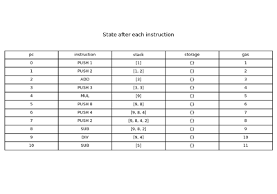
Reverse Polish notation: the stack’s natural order (Łukasiewicz 1924, Hamblin 1957)
1936 — Turing machines and the halting problem#
In plain language. No program can look at every other program and say whether it will ever finish. A system that runs programs from strangers therefore cannot check them in advance; it can only give each one a budget.
Reading the experiment. All two-state Turing machines run from a blank tape. Halted machines stopped, looping ones repeated a configuration and provably never stop, and unknown ones simply used up the step budget.
Turing modeled computation as a machine reading and writing an unbounded tape under a finite table of rules, and proved by diagonalization that no machine decides, for every machine and input, whether it halts. Rice’s theorem extends this to every nontrivial property of a program’s behavior. For a blockchain, this means a node cannot reject non-terminating contracts before running them. Ethereum’s answer is gas: every step is paid for, so every call ends.
Implementation: blockchainkit.vm.systems.turing.run_turing_machine()
(with exact cycle detection) and
blockchainkit.vm.systems.turing.enumerate_machines().
Experiment: the gallery example classifies all 20,736 two-state machines at growing budgets and shows that thousands remain unknown at every budget.
References: A. M. Turing, On computable numbers, with an application to the Entscheidungsproblem, Proceedings of the London Mathematical Society s2-42(1), 230–265 (1937; read 1936). DOI.
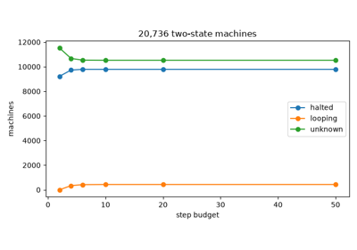
The halting problem: why every call needs a budget (Turing 1936)
1961 — A hardware stack: the Burroughs B5000#
In plain language. A computer can be built to keep its intermediate results on a stack instead of in named registers. The stack is finite, so how deeply a calculation nests decides whether it fits.
Reading the experiment. Two expressions compute the same sum. The plot shows the stack height after each instruction; the dashed line is a small stack limit.
Robert Barton designed the Burroughs B5000 around a hardware stack so that compiled Algol programs mapped directly onto machine operations. The stack needs no register allocation, but it is a finite resource: the depth of an expression tree’s evaluation, its Ershov number, determines how much stack it needs. The EVM caps its stack at 1024 words, and Bitcoin caps the combined stacks at 1000 items.
Implementation: the stack_limit of
blockchainkit.vm.systems.stack_machine.execute();
blockchainkit.vm.visualizers.plots.plot_stack_height().
Experiment: the gallery example evaluates a left-nested and a right-nested sum of twelve numbers; one needs 2 stack slots, the other 12.
References: R. S. Barton, A new approach to the functional design of a digital computer, Proc. Western Joint Computer Conference, 393–396 (1961). DOI.
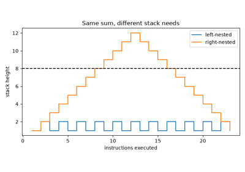
Stack hardware: a bounded stack (Burroughs B5000, Barton 1961)
1962 — The busy beaver#
In plain language. Among all tiny programs that eventually stop, which runs longest? The answer grows so fast that no program can compute it, and finding it for five-state machines took until 2024.
Reading the experiment. \(S(n)\) is the most steps a halting \(n\)-state, two-symbol machine takes from a blank tape; \(\Sigma(n)\) is the most 1s it can leave.
Radó defined the busy-beaver functions and proved they grow faster than any computable function: if \(S\) were computable, one could decide halting for \(n\)-state machines by running each for \(S(n)\) steps. The known values are
Lin and Radó settled \(S(3)\) by computer in 1965; \(S(5)\) was proved by the bbchallenge collaboration in 2024. A gas limit is a busy-beaver bound chosen by policy rather than computed.
Implementation: blockchainkit.vm.systems.turing.busy_beaver() searches
every machine of a given size.
Experiment: the gallery example searches all two-state machines and finds \(S(2) = 6\) and \(\Sigma(2) = 4\); the tests also run the 21-step three-state champion.
References: T. Radó, On non-computable functions, Bell System Technical Journal 41(3), 877–884 (1962). DOI; S. Lin and T. Radó, Computer studies of Turing machine problems, Journal of the ACM 12(2), 196–212 (1965). DOI.
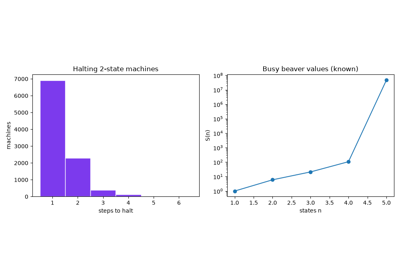
The busy beaver: the longest a small machine can run (Radó 1962)
1966 — Sequence, selection, iteration#
In plain language. Every program, however tangled, can be rewritten using three building blocks: do this then that, choose between two paths, and repeat while a condition holds.
Reading the experiment. The program is written in assembly with labels;
JZ jumps when the top of the stack is zero, JMP always jumps.
Böhm and Jacopini proved that sequence, selection and iteration suffice to express any flowchart. Dijkstra’s Go To Statement Considered Harmful (1968) turned the result into a discipline. On a stack machine the three constructs are straight-line code, a conditional jump and a backward jump. Iteration is also what makes running time depend on the input, and therefore what makes gas necessary: Bitcoin Script leaves out backward jumps entirely.
Implementation: blockchainkit.vm.systems.assembler.assemble(), a
two-pass assembler that resolves labels to addresses.
Experiment: the gallery example sums \(1 + \dots + n\) with a loop, checks Gauss’s formula, and shows gas growing linearly with \(n\).
References: C. Böhm and G. Jacopini, Flow diagrams, Turing machines and languages with only two formation rules, Communications of the ACM 9(5), 366–371 (1966). DOI.
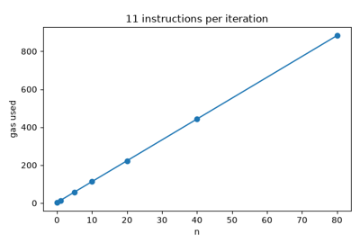
Structured programming: sequence, selection, iteration (Böhm and Jacopini 1966)
1970 — Forth and stack words#
In plain language. Instead of naming variables, a program can shuffle the values on its stack with a few small words: duplicate the top, drop it, swap the top two, copy the second, rotate three.
Reading the experiment. A stack diagram ( before -- after ) lists the
stack from bottom to top before and after a word.
Charles Moore developed Forth around 1970 to control radio telescopes. Its
programs are sequences of words acting on a data stack, documented by stack
diagrams such as OVER ( a b -- a b a ) and ROT ( a b c -- b c a ). The
language is tiny, fast, and easy to implement on small machines. Bitcoin’s
Script is explicitly Forth-like, and the EVM has whole families of DUP and
SWAP instructions.
Implementation: the DUP, DROP, SWAP, OVER and ROT opcodes of
blockchainkit.vm.systems.stack_machine.execute(), whose stack effects are
listed in blockchainkit.vm.systems.stack_machine.STACK_EFFECTS.
Experiment: the gallery example checks every word against its stack diagram and evaluates a polynomial by Horner’s rule with stack words only.
References: E. D. Rather, D. R. Colburn and C. H. Moore, The evolution of Forth, HOPL-II, 177–199 (1993). DOI.
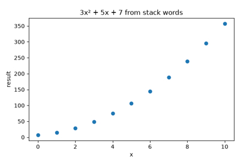
Forth: programming with stack words (Moore 1970)
1978–1990 — State-machine replication#
In plain language. Copies of a program that start alike and process the same requests in the same order stay identical. Agreeing on the order is the hard part; that is what consensus is for.
Reading the experiment. Each command is a small program updating a counter in storage. A log is the order in which commands are applied.
Lamport’s 1978 paper showed how a total order of commands lets distributed processes simulate one state machine; Schneider’s 1990 tutorial made state machine replication the general recipe for fault-tolerant services. It needs two things: agreement on the order of inputs, and deterministic execution. A blockchain supplies the first with consensus and the second with a virtual machine that has no access to clocks, randomness or the network.
Implementation: determinism of
blockchainkit.vm.systems.stack_machine.execute(): the same program,
storage and arguments always give the same result.
Experiment: the gallery example replays one log on three replicas, applies the same commands in all six orders, and lets each replica read its own clock.
References: L. Lamport, Time, clocks, and the ordering of events in a distributed system, Communications of the ACM 21(7), 558–565 (1978); F. B. Schneider, Implementing fault-tolerant services using the state machine approach: a tutorial, ACM Computing Surveys 22(4), 299–319 (1990). DOI.
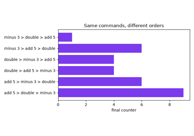
State-machine replication: same inputs, same order, same state (Lamport 1978, Schneider 1990)
1981 — The transaction concept#
In plain language. A transfer must either fully happen or not happen at all. If it fails halfway, everything it already changed is undone.
Reading the experiment. The trace shows working storage after each instruction. Committed storage changes only if the whole program succeeds.
Jim Gray defined transactions as units of work that are atomic, consistent and durable (isolation was added to make the ACID properties). Atomicity means a failure at any point leaves no partial effects. Every Ethereum call is a transaction in this sense: when execution reverts or runs out of gas, all of its storage writes are discarded, although the gas spent is still paid.
Implementation: blockchainkit.vm.systems.stack_machine.execute() runs
on a copy of storage and returns it only on success; REVERT aborts
deliberately.
Experiment: the gallery example writes a debit, then reverts the transfer, and checks that the debit was never committed.
References: J. Gray, The transaction concept: virtues and limitations, Proc. 7th International Conference on Very Large Data Bases, 144–154 (1981).
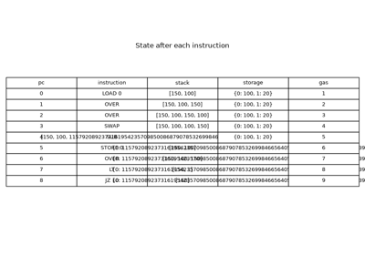
Atomic transactions: all or nothing (Gray 1981)
1994 — Smart contracts#
In plain language. Some agreements can be enforced by a machine instead of a court: a vending machine sells to anyone who pays, and nobody can take the goods without paying.
Reading the experiment. Storage holds the stock, the price and the revenue; each customer’s payment is the call’s argument; the change is the result.
Nick Szabo coined smart contract for computerized protocols that execute the terms of a contract, and gave the vending machine as their ancestor. He argued they could reduce the need for trusted intermediaries. Ethereum made the idea practical by putting contract code and state on a blockchain, where every node executes it and anyone can check the result.
Implementation: blockchainkit.vm.systems.programs.vending_machine(),
run with the arguments of
blockchainkit.vm.systems.stack_machine.execute().
Experiment: the gallery example serves 25 customers and checks after each one that revenue equals price times items sold.
References: N. Szabo, Smart contracts (1994); N. Szabo, Formalizing and securing relationships on public networks, First Monday 2(9) (1997). DOI.
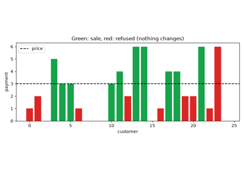
Smart contracts: the vending machine (Szabo 1994)
1995 — Bytecode verification#
In plain language. Before running code from a stranger, check that it cannot misuse the machine on any path, without running it.
Reading the experiment. The verifier follows every path and tracks how many
values the stack holds at each instruction. max_depth is the most it can
ever hold.
Gosling’s design of the Java virtual machine verified downloaded bytecode before execution, by a data-flow analysis over all paths: no instruction may pop more values than are present, and paths that meet must agree on the stack’s shape. Verified code runs without run-time stack checks, with stack size known in advance. The same idea of validating code once, at deployment, is behind Ethereum’s EVM Object Format.
Implementation: blockchainkit.vm.systems.verifier.verify_bytecode(), an
abstract interpretation of stack heights.
Teaching vs production
verify_bytecode tracks stack heights only. The JVM verifier also infers the
type of every stack slot and local variable. See Exact conventions and model boundaries for this
package’s exact conventions.
Experiment: the gallery example verifies the package’s contracts, catches an underflow on a path a test run does not take, and rejects a loop that grows the stack.
References: J. Gosling, Java intermediate bytecodes, ACM SIGPLAN Workshop on Intermediate Representations, 111–118 (1995). DOI.
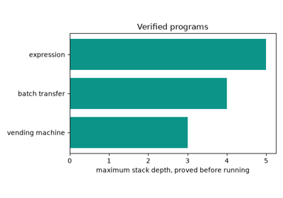
Bytecode verification: check before you run (Gosling 1995)
2009 — Bitcoin Script and pay-to-public-key-hash#
In plain language. A Bitcoin coin is locked by a tiny program. To spend it, you supply the inputs that make the program succeed: usually a public key with the right fingerprint and a signature by it.
Reading the experiment. The locking script sits on the coin; the unlocking script comes with the spending transaction. The operation count is the number of steps executed.
Bitcoin’s first release validated spends with Script, a stack language with
no loops: OP_DUP OP_HASH160 <hash> OP_EQUALVERIFY OP_CHECKSIG pays to whoever
shows a key with that hash and a valid signature. Without loops, execution time
is bounded by script length, so Bitcoin needs no gas. Until 2010 the unlocking
and locking scripts were concatenated and run as one; a script ending in
OP_TRUE OP_RETURN could then skip the lock’s checks (CVE-2010-5141), and the
two are now run separately.
Implementation: blockchainkit.vm.systems.script.verify_script(),
blockchainkit.vm.systems.script.p2pkh_locking() and
blockchainkit.vm.systems.script.p2pkh_unlocking(). Teaching differences:
OP_HASH256 replaces OP_HASH160, and signatures are this package’s
Schnorr signatures over an explicit message.
Teaching vs production
This interpreter supports a small opcode subset on big-endian numbers, uses
OP_HASH256 for OP_HASH160, and checks this package’s Schnorr signatures
over an explicit message, not a transaction digest. See Exact conventions and model boundaries for
this package’s exact conventions.
Experiment: the gallery example spends a coin with the right key, the wrong key, and a signature over a different transaction.
References: S. Nakamoto, Bitcoin v0.1 source code, script.cpp (2009);
Bitcoin Script documentation.
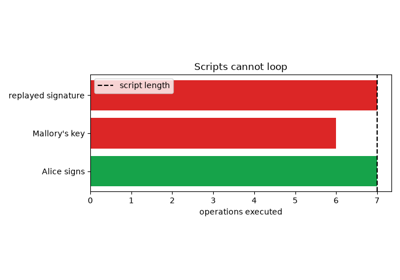
Bitcoin Script: pay to public-key hash (Nakamoto 2009)
2014 — Ethereum and programmable replicated state#
In plain language. Participants can agree on program results as well as payments if they all execute the same rules. A work budget stops one program from consuming unlimited computation.
Reading the experiment. S is the state before execution and S prime is the state afterward. In this experiment, a successful program returns updated storage; an error leaves the original storage untouched. This small virtual machine is separate from the payment ledger, rather than an Ethereum implementation.
Ethereum’s whitepaper describes a blockchain as a state-transition system whose rules can include programmable contracts. Replication requires deterministic execution, while bounded execution cost limits the resources an individual program can demand.
Implementation: blockchainkit.vm.systems.stack_machine.execute() provides a
256-bit stack machine, integer storage, branches, a stack bound, and an
instruction budget. It works on a storage copy and returns a new state only
after success; errors leave the caller’s state unchanged.
Teaching vs production
Every instruction costs one gas unit here, and there is no memory, contract calls, logs or refunds. This is not the EVM. See Exact conventions and model boundaries for this package’s exact conventions.
Experiment: the gallery example compares successful execution, out-of-gas failure, and a bounded infinite loop. Costs are one unit per instruction, not an EVM gas schedule. The VM is independent of the transfer-only ledger: connecting arbitrary contract transactions would require a further consensus specification.
References: V. Buterin, A Next-Generation Smart Contract and Decentralized Application Platform (2014). Original whitepaper maintained by Ethereum. The historical design is not a specification of the present-day Ethereum network.
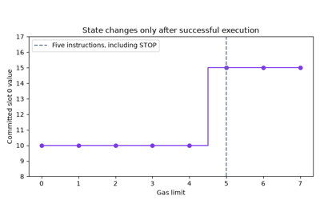
Ethereum: a replicated computer metered by gas (Buterin 2014)
2015–2016 — Hash time-locked contracts#
In plain language. “Bob gets this money if he reveals the secret behind this fingerprint; if he does not by a deadline, Alice gets it back.” Chaining such promises with the same secret lets payments hop across many people safely.
Reading the experiment. The lock time is the block height at which the
spending transaction becomes valid; OP_CHECKLOCKTIMEVERIFY fails if it is
earlier than the script’s deadline.
Peter Todd’s OP_CHECKLOCKTIMEVERIFY (BIP 65, activated in 2015) let a script
refuse a spend before a given time. Combined with a hash lock it gives the
hash time-locked contract: pay on revealing a preimage, or refund after a
timeout. Poon and Dryja’s Lightning Network chains HTLCs sharing one hash along
a route of payment channels, so that revealing the preimage at the last hop
lets every earlier hop claim too, and timeouts that grow toward the sender
protect each intermediary.
Implementation: blockchainkit.vm.systems.script.htlc_locking() and the
locktime argument of blockchainkit.vm.systems.script.verify_script().
Teaching vs production
OP_CHECKLOCKTIMEVERIFY compares heights only. Lightning also uses relative
timelocks (OP_CHECKSEQUENCEVERIFY) and penalty transactions, which are not
modeled. See Exact conventions and model boundaries for this package’s exact conventions.
Experiment: the gallery example claims an HTLC with the secret, fails with a guess, refunds only from the deadline on, and settles a two-hop route.
References: P. Todd, BIP 65: OP_CHECKLOCKTIMEVERIFY (2014). Specification; J. Poon and T. Dryja, The Bitcoin Lightning Network: scalable off-chain instant payments (2016).
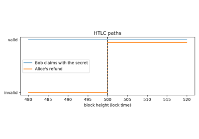
Hash time-locked contracts: pay for a secret, or get a refund (2015-2016)
2016 — The DAO and reentrancy#
In plain language. A contract paid out before writing down that it had paid. The recipient, itself a program, asked to be paid again during the payment, and again, and again.
Reading the experiment. “Pay, then update” is the vulnerable order; “update,
then pay” is the checks-effects-interactions order. Each nested call is one
re-entry into withdraw.
The DAO was a crowdfunded investment contract holding about 14% of all ether. Its split function sent ether before zeroing the caller’s balance, and sending ether to a contract runs that contract’s code. In June 2016 an attacker re-entered the function from that code and drained about 3.6 million ether; Ethereum hard-forked to reverse the theft, and the dissenting chain continues as Ethereum Classic. Reentrancy became the canonical smart-contract bug, avoided by updating state before any external call.
Implementation: blockchainkit.vm.systems.reentrancy.drain_bank(), a
Python model of a bank contract and an attacker whose fallback re-enters.
Teaching vs production
drain_bank is a Python model of the call pattern, not EVM execution; the
DAO’s real split function also involved token balances and a waiting period.
See Exact conventions and model boundaries for this package’s exact conventions.
Experiment: the gallery example drains a bank with both orders and shows how the call-depth limit of 1024 bounds the attack for small deposits.
References: N. Atzei, M. Bartoletti and T. Cimoli, A survey of attacks on Ethereum smart contracts (SoK), POST 2017, LNCS 10204, 164–186 (2017). DOI.
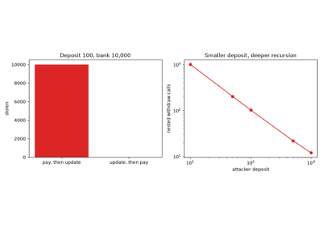
The DAO and reentrancy: checks, effects, interactions (2016)
2016 — Gas repricing after denial-of-service attacks#
In plain language. If an operation costs little gas but a lot of real work, an attacker can fill blocks with it and slow every node down. The fix is to charge what the work really costs.
Reading the experiment. Real work is a teaching estimate in units of one arithmetic instruction, with a storage read counting 100. Both programs loop until a block’s worth of gas runs out.
In September 2016 attackers spammed Ethereum with transactions that called
underpriced, disk-heavy instructions such as EXTCODESIZE, making blocks take
far longer to process. EIP-150 (the Tangerine Whistle fork, October 2016)
raised their prices: SLOAD from 50 to 200 gas, BALANCE from 20 to 400,
EXTCODESIZE and CALL to 700. Gas prices are security parameters: an
attacker always picks the instruction with the most work per unit of gas.
Implementation: the gas_costs schedule of
blockchainkit.vm.systems.stack_machine.execute().
Teaching vs production
The real-work costs are teaching estimates in arithmetic units, not measurements of any Ethereum client. See Exact conventions and model boundaries for this package’s exact conventions.
Experiment: the gallery example compares the real work done by a block of storage reads and a block of arithmetic, before and after repricing.
References: V. Buterin, EIP-150: Gas cost changes for IO-heavy operations (2016). Specification.
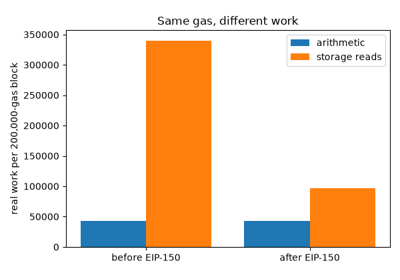
Gas repricing after denial-of-service attacks (EIP-150, 2016)
2018 — Integer overflow: BeautyChain#
In plain language. Machine numbers wrap around like a car’s odometer. A token contract multiplied two numbers, the product wrapped to zero, and its balance check passed for a sender who had nothing.
Reading the experiment. Balances live in storage, one slot per account.
value is paid to each of two recipients; the contract checks the sender’s
balance against 2 × value computed modulo \(2^{256}\).
In April 2018 an attacker called the BeautyChain token’s batchTransfer with
two recipients and value \(= 2^{255}\), so that
passed the balance check, and created \(2^{256}\) tokens (CVE-2018-10299). Exchanges suspended the token. Checked arithmetic, through the SafeMath library and since Solidity 0.8 by default, reverts on overflow instead.
Implementation: blockchainkit.vm.systems.programs.batch_transfer(),
with checked=True for the SafeMath test amount / count == value.
Teaching vs production
batch_transfer is a stack-machine program with storage slots as accounts,
not the Solidity contract. See Exact conventions and model boundaries for this package’s exact
conventions.
Experiment: the gallery example mints tokens from an empty account with the unchecked contract, and shows the checked one reverting while agreeing on every ordinary transfer.
References: CVE-2018-10299 (2018).
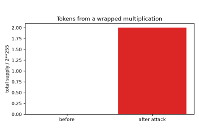
Integer overflow: minting tokens from nothing (BeautyChain, 2018)